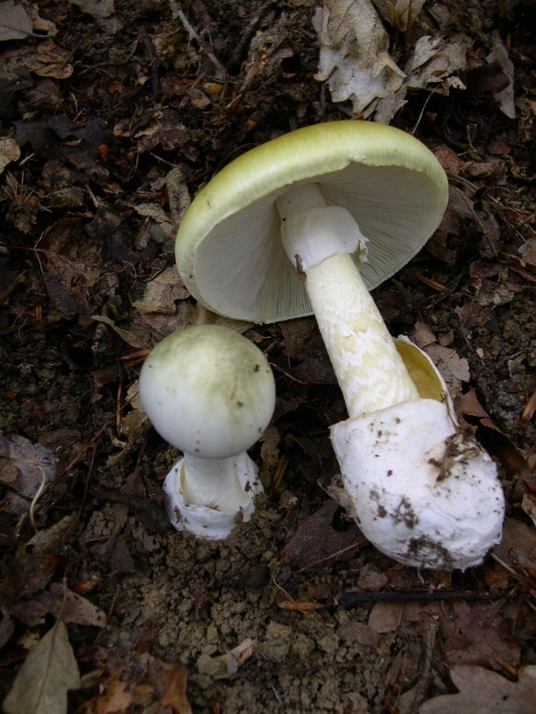
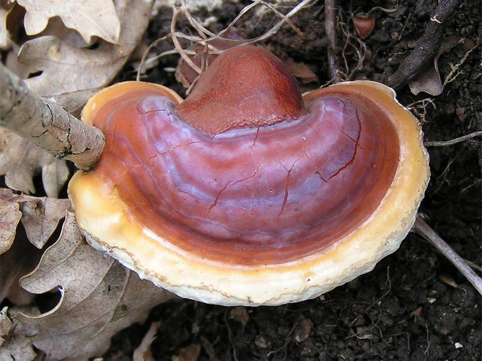

1Mantar bitki değil
Mantarlar uzun süre bitki sanıldı. Yerden biterler, hareket etmezler ve çoğu zaman bitkilerle aynı ormanda yaşarlar. Bu yüzden eski biyoloji kitaplarında bitkilerle birlikte anlatılırlardı.
Bugün ise mantarlar bitkilerden ve hayvanlardan ayrı, kendi başına bir canlı âlemi olarak kabul ediliyor. Bu âlemde ekmek mayası, küfler ve yediğimiz şapkalı mantarlar gibi çok farklı canlılar bulunur.

2Besinlerini nasıl alıyorlar?
Bitkiler fotosentez yapar. Yani güneş ışığını kullanarak kendi besinlerini üretir. Mantarlarda ise fotosentez yapmayı sağlayan klorofil yoktur. Mantarlar, tıpkı hayvanlar gibi, besinlerini dışarıdan almak zorundadır.
Ancak mantarların bir ağzı yoktur. Bunun yerine çevrelerine sindirim enzimleri salgılayarak besinleri dışarıda parçalar, sonra bu parçaları emerler. Birçok mantar ölü bitki ve hayvanları çürüterek doğada geri dönüşüm görevini üstlenir.
3Hücre duvarı: kitin
Bitki hücrelerinin duvarı selülozdan yapılır. Mantar hücrelerinin duvarı ise kitin adlı bir maddeden oluşur. Kitin, böceklerin, karideslerin ve yengeçlerin dış iskeletini oluşturan maddeyle aynıdır.
Mantarlar ayrıca enerjiyi bitkiler gibi nişasta olarak değil, hayvanlar gibi glikojen olarak depolar.

4Genler ne diyor?
En güçlü kanıt genetikten geliyor. DNA karşılaştırmaları, mantarlar ile hayvanların evrim ağacında Opisthokonta adı verilen aynı büyük dalda bulunduğunu gösteriyor. Bu iki grup, bitkilerden ayrıldıktan çok sonra birbirinden ayrıldı.
Kısacası bir mantar, genetik olarak bir domatese ya da bir ağaca göre size daha yakındır. Mantar ve hayvan hücrelerindeki bazı benzerlikler, mantar enfeksiyonlarına karşı ilaç geliştirmeyi zorlaştırır. Çünkü mantarı öldüren bir ilaç, insan hücrelerine de zarar verebilir.
💡 Biliyor muydun?
- Bilinen en büyük canlılardan biri bir mantardır. ABD'nin Oregon eyaletindeki bir bal mantarı, yer altında yaklaşık 9 km²lik bir alana yayılmıştır.
- Penisilin, bir küf mantarından elde edilen ilk antibiyotiktir. 1928'de Alexander Fleming tarafından keşfedildi.
- Ağaçların kökleri ile mantarlar arasında besin alışverişine dayanan geniş yer altı ağları bulunur.
✅ Kaynaklar
📷 Görseller
- Kapak: Kieran Roy Powell · CC BY 4.0 · Wikimedia Commons
- Ölüm meleği mantarı (Amanita phalloides): Dünyadaki en zehirli mantarlardan biri: Archenzo · CC BY-SA 3.0 · Wikimedia Commons
- Raf şeklinde büyüyen reishi mantarı: Eric Steinert · CC BY-SA 3.0 · Wikimedia Commons